Tracking Ida
Playthrough (Rough Cut)
Here's a rough cut! Better version with an explanation voice-over will be ready in a couple days.
This is an accelerated playthrough. If you want to follow the narrative, pause the video when I zoom into artifacts and notes.
Enjoy some more rough videos while we continue editing :)
Tracking Ida Sneak Peak
Tracking Ida is an educational alternate reality game (ARG) inspired by the pioneering investigative journalism of Ida B. Wells in the 1890s. Players follow the example of Wells’ crusade against lynching and apply her strategies to an investigation of police and vigilante killings today.
Along the way, they solve puzzles, comb through historical archives (with the help of a phonograph), role-play as investigative journalists, and harness various forms of media to spread awareness about current issues affecting their community.
Pilot at King Drew High School (Sneak Peak)
Tracking Ida piloted at King Drew High School in Watts, Los Angeles in March 2017. It was played by 80 eleventh graders in their US history class for one week.
Qualitative Research (Sneak Peak)
We conducted focus group interviews with 22 of the 80 high school students who played Tracking Ida in school. We are currently conducting qualitative research (coding interview transcripts, etc) to determine the educational outcomes and impact of the game on this group of students. Exciting conclusions to come, but here's some video of our process in the meantime.
 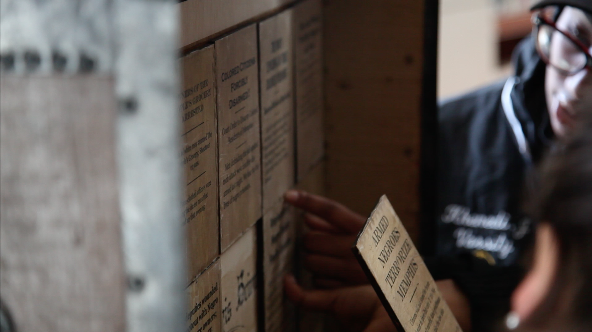
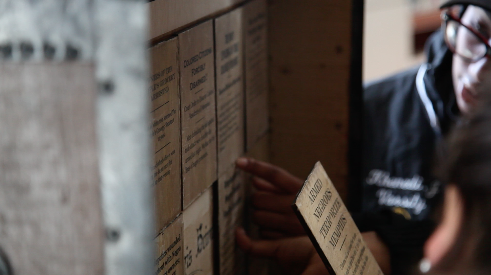
 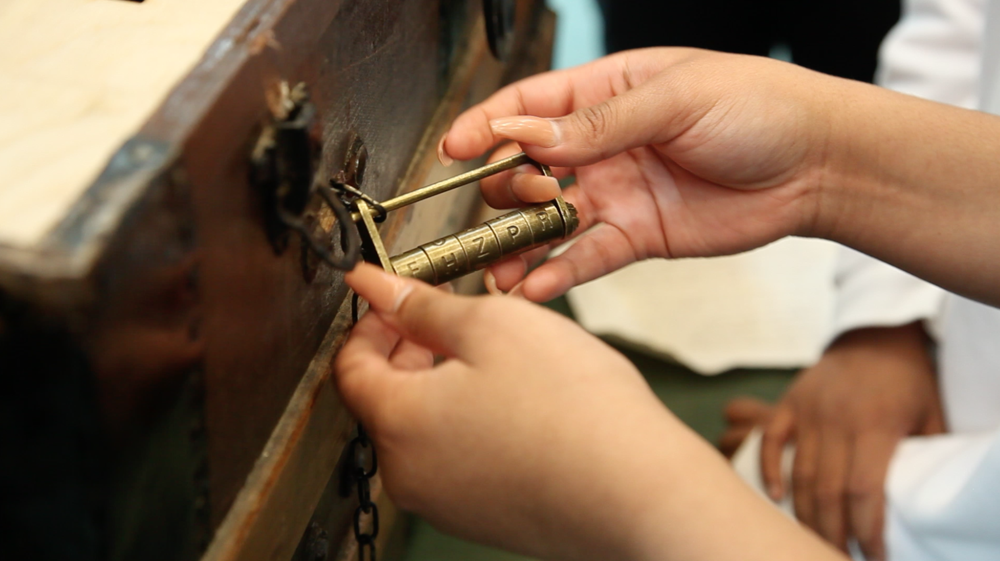
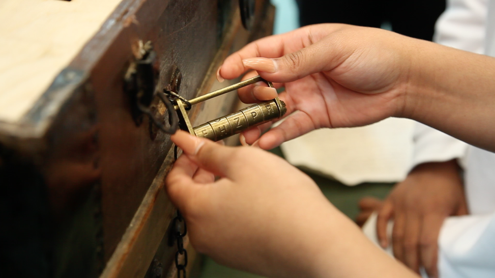

 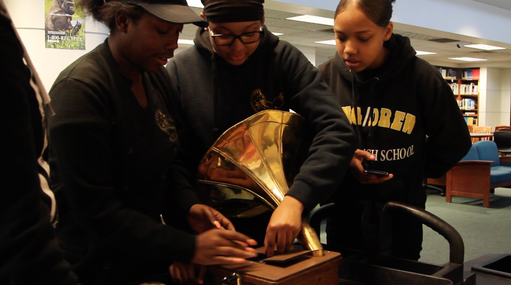
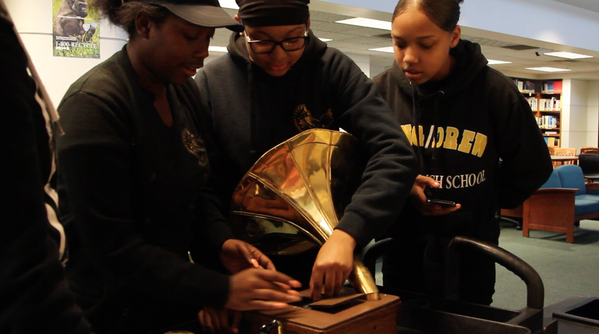


 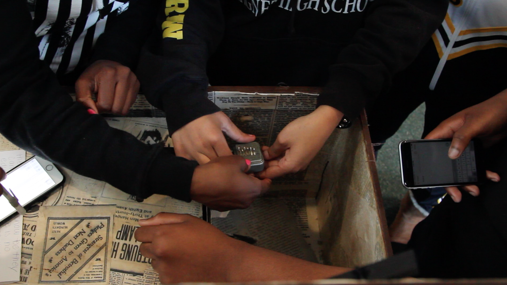
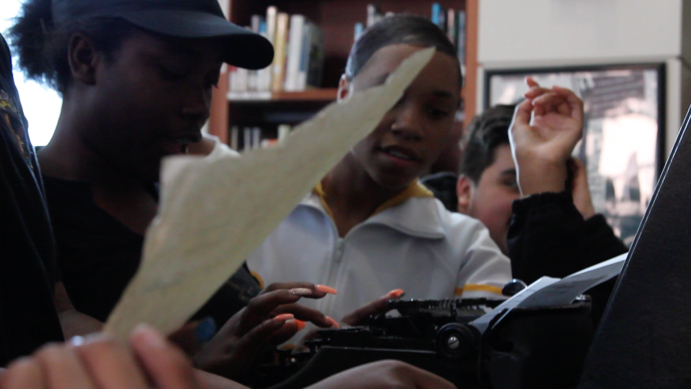
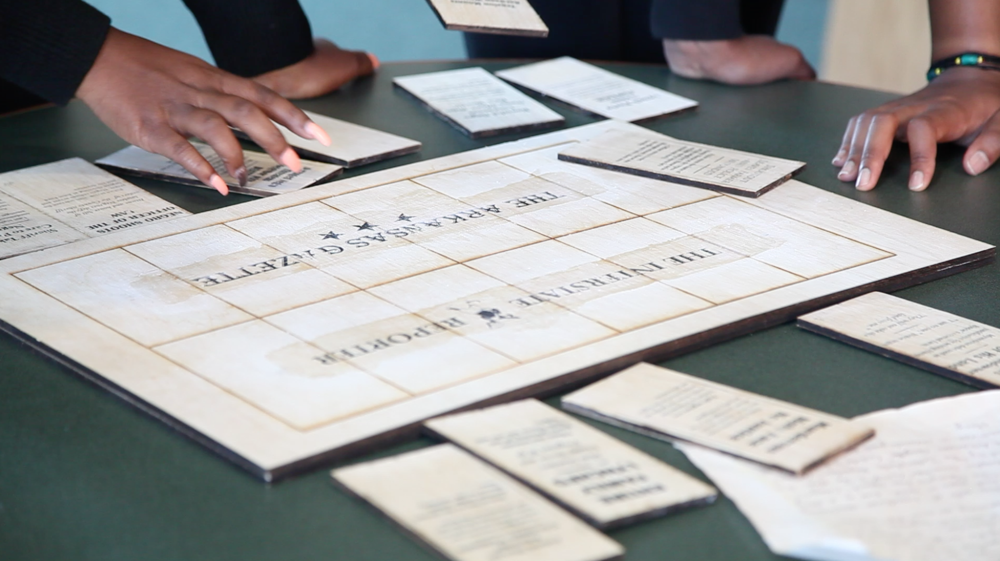
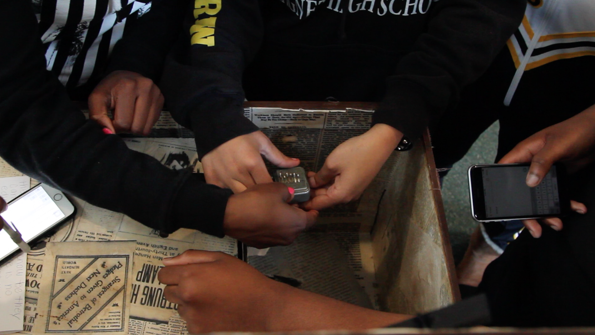
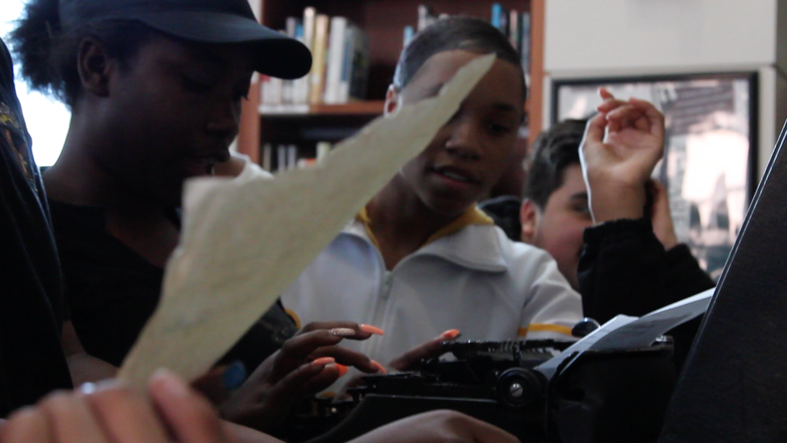
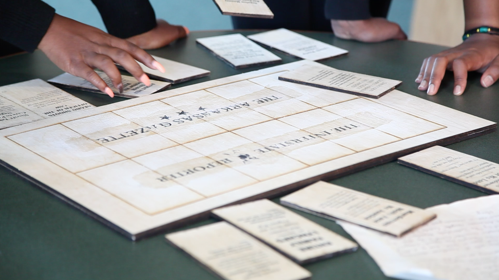
 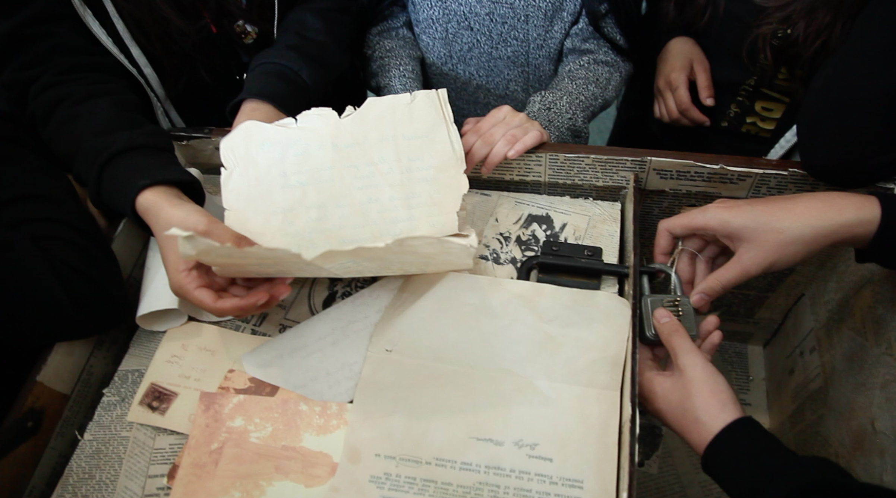
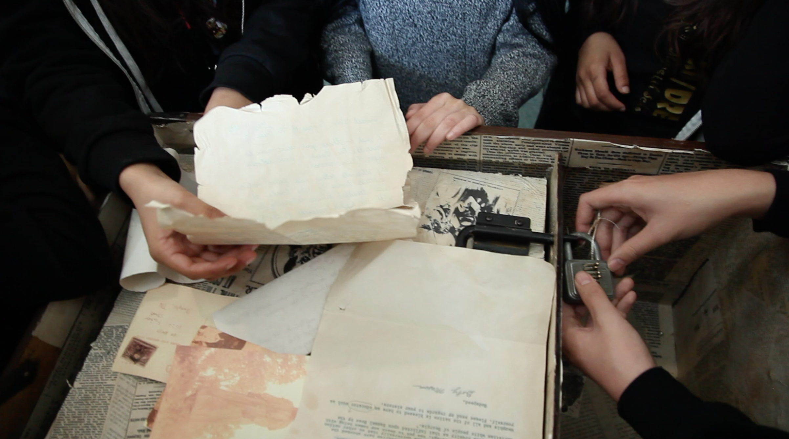